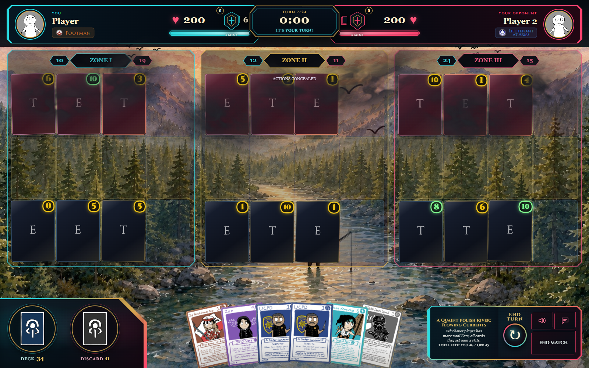

Theoretical supporter · Howard Dev ModeVeil of Silence
Three samples captured on the actual game board. Each supporter test card applies mist as if your opponent played it. Play it in Howard Dev Mode to see the animated effect.

Loose charcoal wisps with transparent gaps and soft, irregular edges.
To test: Howard Dev Mode → your deck pile → add Veil of Silence (Opponent / 1–3) or Oktai (Opponent Test) → set the card face up. Mist ends with the current turn; Oktai conceals your view immediately for four affected turns.